牠的故事
從紙箱到你身邊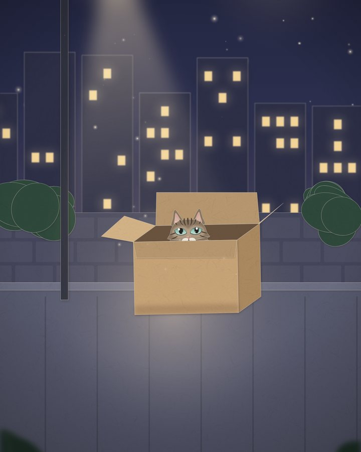
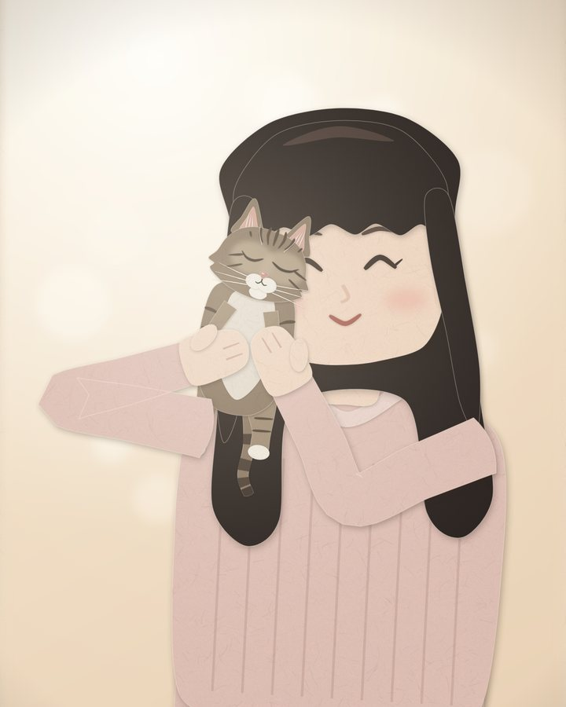
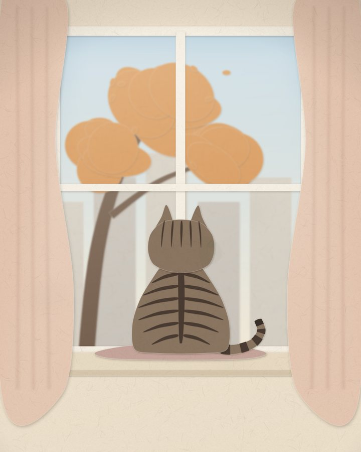
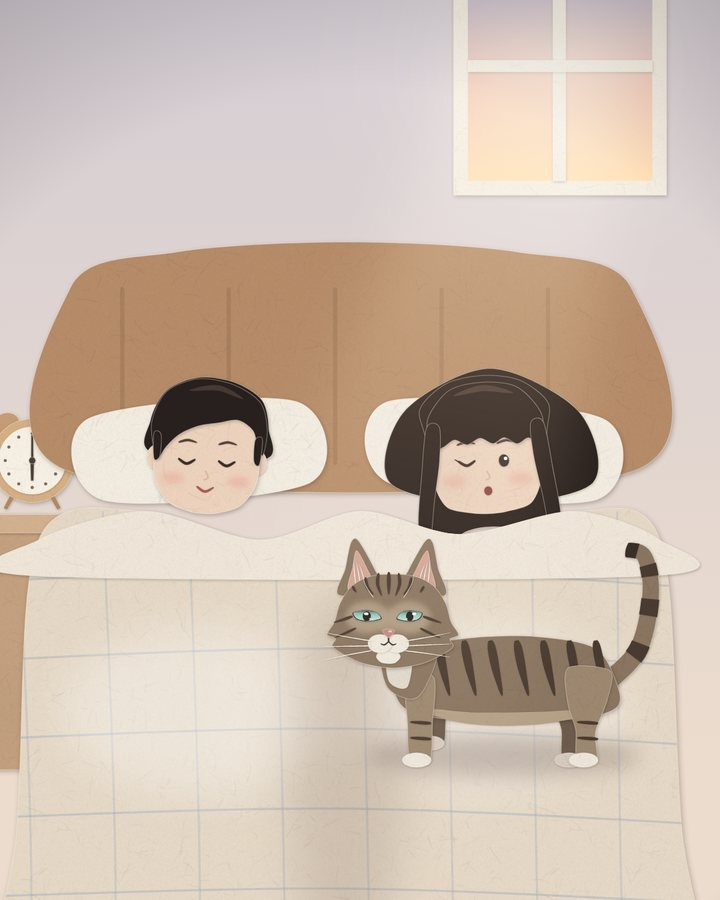
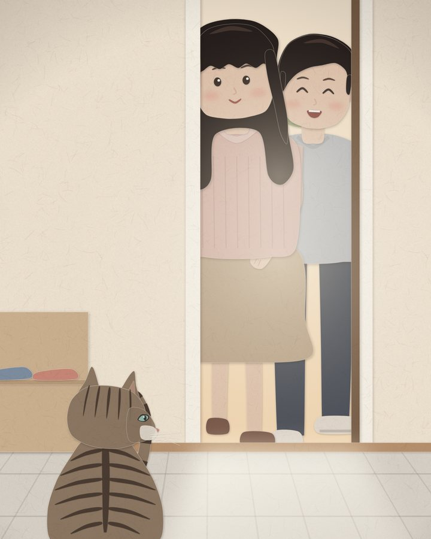
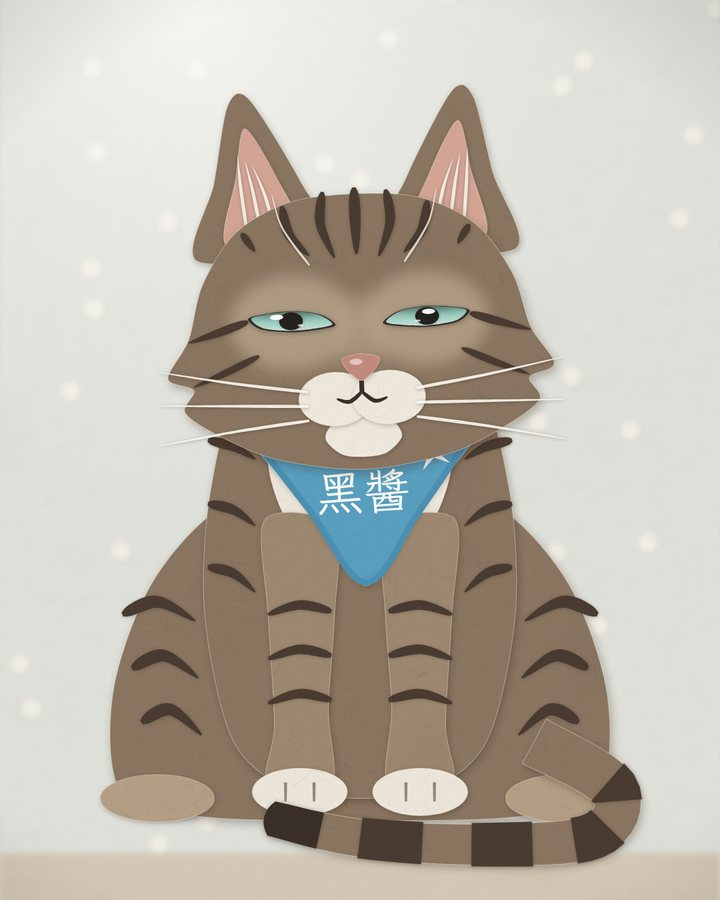
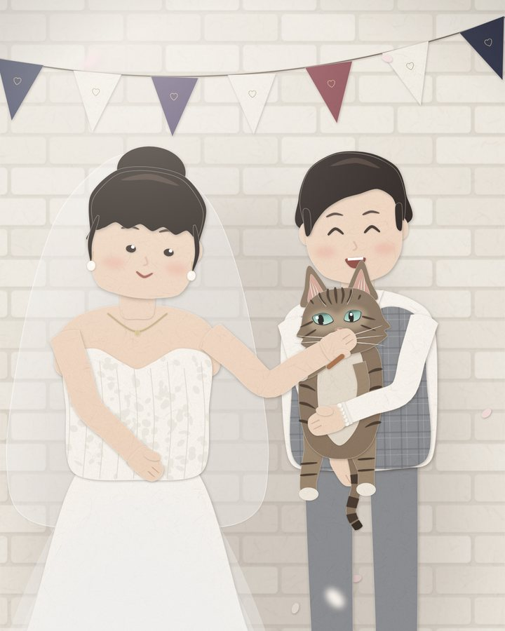
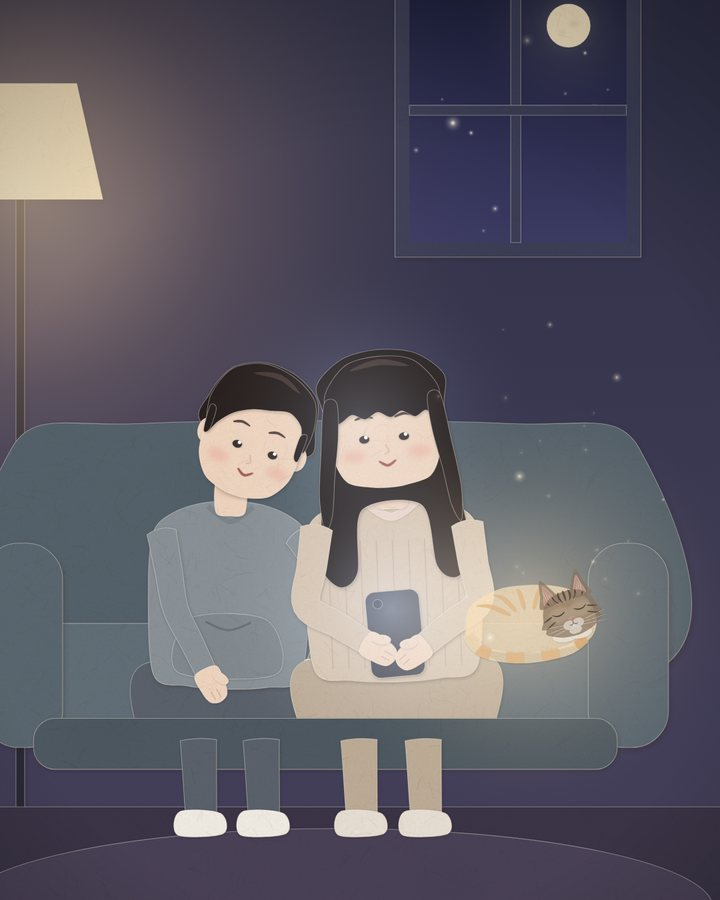
往右滑，看下去
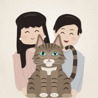
黑醬在身邊 給琦琦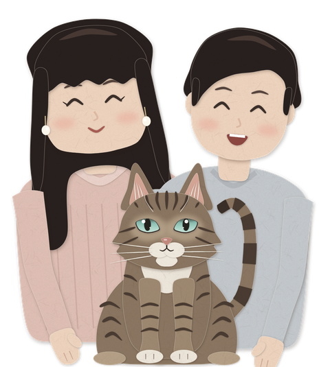
琦琦，
今天是你的生日。
我沒有辦法跳上桌子，
把奶油偷舔一口。
可是早上六點，
我還是想去踩你的肚子。
紙箱來的時候，
我還是第一個進去。
鑰匙一響，
我就在門口。
你看不到我，
我也還是在這裡。
生日快樂。
今年，換我陪你許願。








往右滑，看下去
黑醬的身影還沒有顯示出來。
我們再試一次，好嗎？
用手機開啟，為黑醬留一個小小的位置。
輕點蠟燭，在心裡說一個願望。
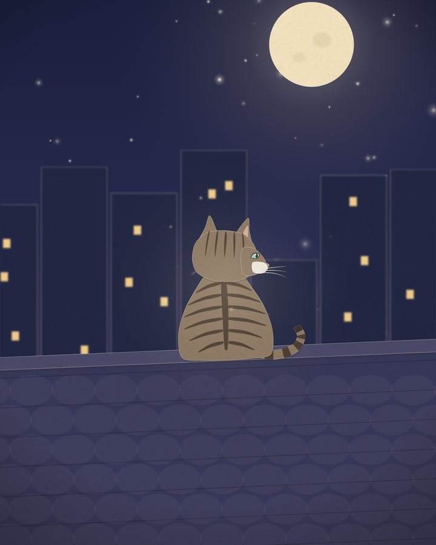
有些位置，一直為你留著。
黑醬，謝謝你來過我們的生命。先選一個黑醬的樣子，再用手機按「讓黑醬陪我一下」。允許使用相機，慢慢掃描地面，找一個想讓牠待著的位置。
牠會輕輕呼吸，偶爾偏偏頭、動動耳朵。什麼都不必做，就讓黑醬陪你待一會兒。
iPhone／iPad 請用 Safari。想換個樣子時，先關閉相機畫面，回到這裡重選，再讓黑醬來到身邊。Android 請用支援 AR 的 Chrome，進入後也可使用畫面上的選單。
想把這裡加到手機主畫面：Safari 按「分享」，選「加入主畫面」，圖示就是她們三個。
黑醬可以旋轉與縮放，調到你覺得舒服的大小。這裡的尺寸是試看比例，並非實際量測。
暫停只影響這個頁面。相機畫面使用模型內的循環動作；若裝置設定為減少動態，頁面會先暫停。動態檔案已檢查，實際手機呈現仍需試看確認。
預覽元件授權・字型：霞鶩文楷（SIL OFL）